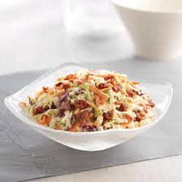

Sweet Restaurant Slaw
Home

Ingredients
- 1 (16 ounce) bag coleslaw mix
- 2 tablespoons diced onion
- ⅔ cup creamy salad dressing (such as Miracle Whip)
- ½ cup white sugar
- 3 tablespoons vegetable oil
- 1 tablespoon white vinegar
- ½ teaspoon poppy seeds
- ¼ teaspoon salt
Directions
- Gather the ingredients.
- Combine coleslaw mix and onion in a large bowl.
- Whisk salad dressing, sugar, vegetable oil, vinegar,
poppy seeds, and salt together in a medium bowl until blended.
- Pour dressing over coleslaw mixture and toss to coat. Chill
for at least 2 hours before serving.